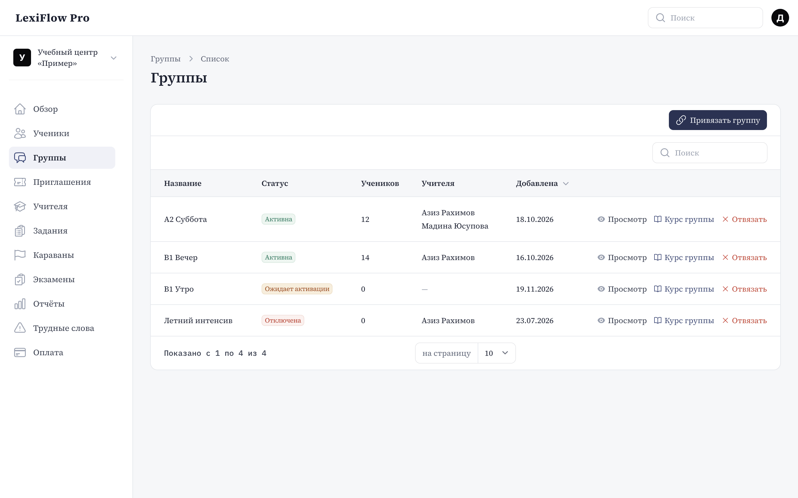
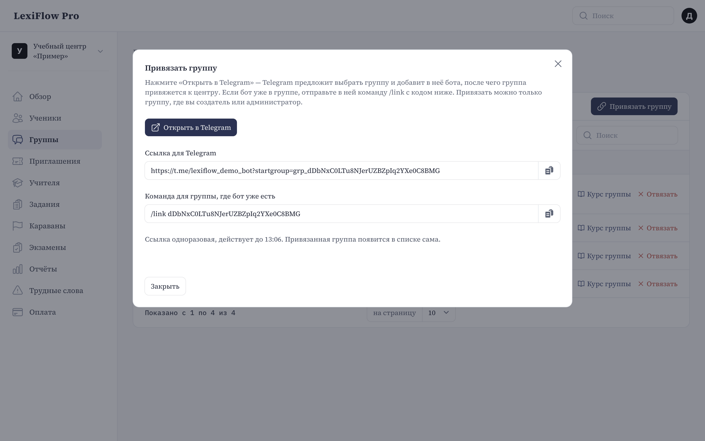
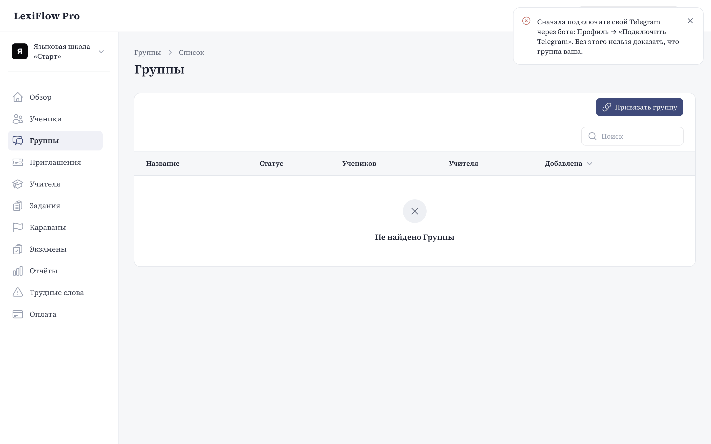
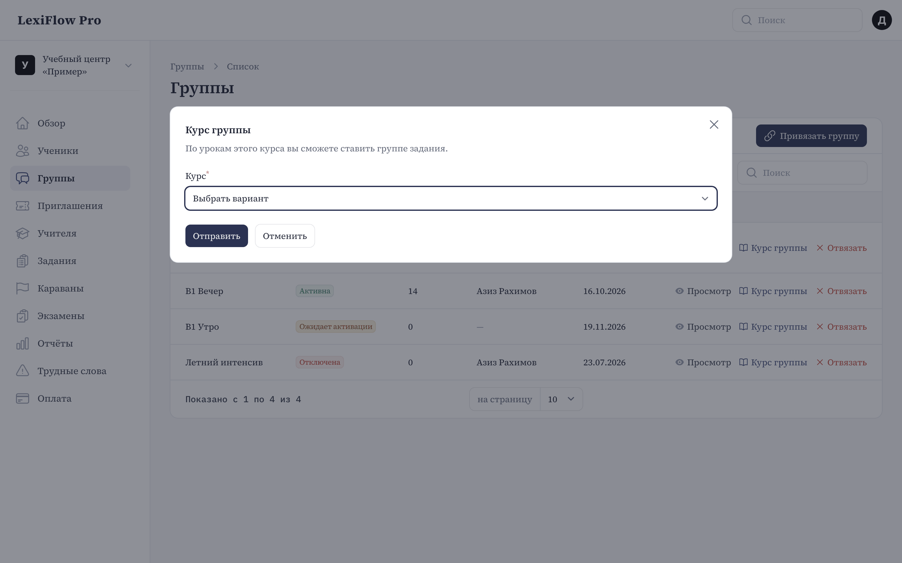
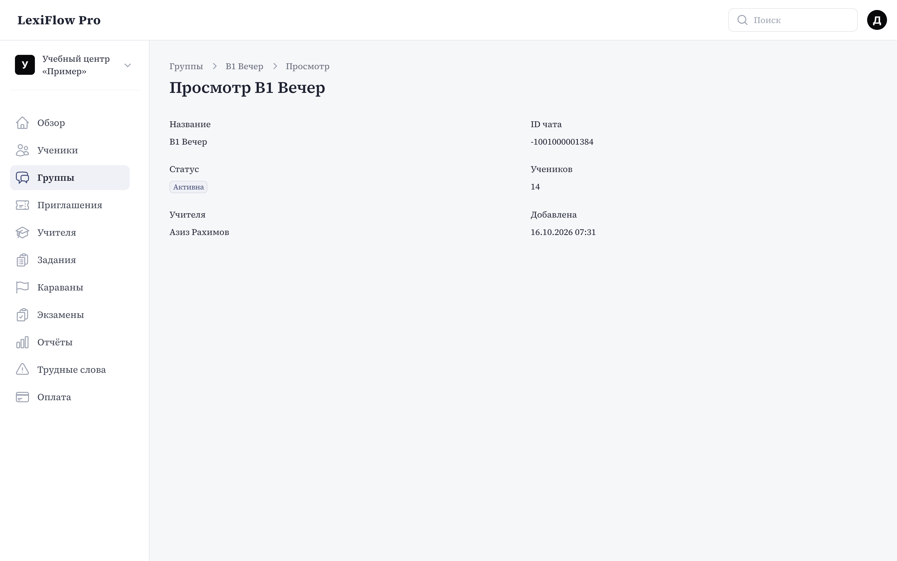
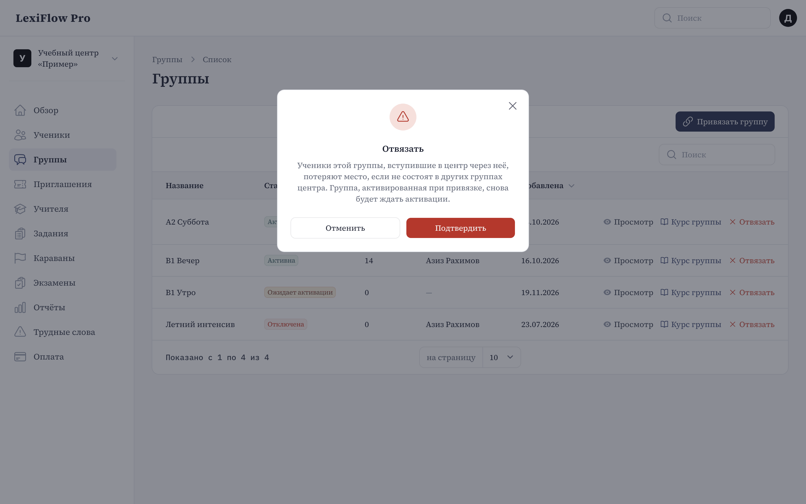
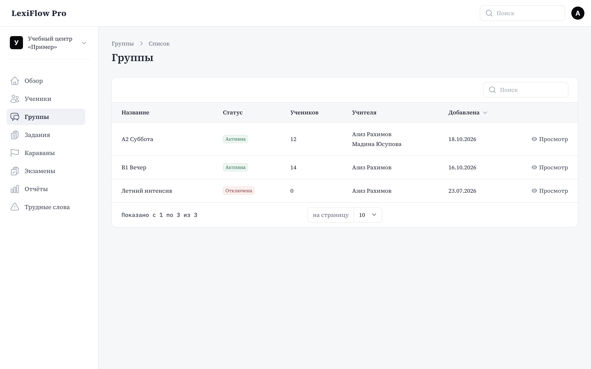

Группа в LexiFlow — это ваша Telegram-группа (чат класса), привязанная к центру. Через неё бот запускает тренировки и экзамены, публикует задания, а ученики, вступившие в группу, становятся участниками центра.
Кто имеет доступ: владелец видит все группы центра и управляет ими; учитель видит только группы, где он назначен, и ничего в них не меняет.

| Статус | Что значит |
|---|---|
| Активна | бот отвечает на команды, можно выдавать задания |
| Ожидает активации | бот в группе отвечает только «группа ещё не активирована». Группу центра с действующей подпиской бот активирует сам при привязке; без подписки её активирует администратор платформы |
| Отключена | группа выключена (например, бот удалён из чата). Новые задания в ней не создаются; уже выданные задания ученики продолжают видеть |
Перед привязкой подключите свой Telegram в профиле (глава «Начало работы»). Привязать можно только группу, где вы создатель или администратор.
/link КОД) и отправьте её в группу.
/link. Ссылка на снимке — стендовая.Если привязка не удалась, бот в группе ответит коротко. Причину смотрите в этом же окне кабинета, строка «Последняя попытка привязки»:
| Причина в окне | Что делать |
|---|---|
| Ссылка ещё не использована | откройте ссылку или отправьте команду |
| Срок ссылки истёк — получите новую | нажмите «Привязать группу» ещё раз |
| Ссылку открыл другой аккаунт Telegram | откройте ссылку с того Telegram, что подключён к вашему профилю |
| Вы не администратор этой группы | станьте создателем или администратором группы |
| Группа уже привязана к другому центру | её нужно сначала отвязать там |
| Вы больше не владелец центра, или центр приостановлен | обратитесь к администратору платформы |
| Telegram не ответил | отправьте команду в группе ещё раз |

По урокам курса группы вы будете выдавать задания, а бот — запускать тренировки и экзамены. Без курса группа не появится в форме задания.

«Просмотр» показывает название, ID чата, статус, число учеников, учителей и дату привязки.


